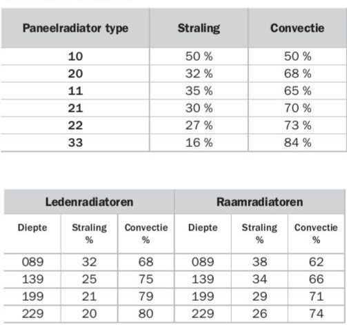

Radiatoren
9 February, 2019
21:40
Inhoud
20 * 13 / 0.35 = 743
20 * 13 * 2.8 = 728
1/2.8=0.3571
20 * 13 * ( 1/1.1 - 1/3 ) = 149.697
20 * 13 * ( 2.8 - 1.1 ) = 442.0
20 * 13 * ( 2.8 ) = 728
20 * 13 * ( 1.1 ) = 286
726-286=440
http://www.olino.org/blog/nl/articles/2010/12/20/radiator-booster/
Samenvatting
Volgens de geldende Europese norm EN442 moet het vermogen van een radiator worden opgegeven bij 75/65/20, de zogenaamde P50-waarde.
We hebben een goede formule om het vermogen van een radiator om te rekenen naar een andere (lagere) aanvoer temperatuur. We hebben metingen verricht bij een aanvoer temperatuur van 43 graden Celsius, waaruit blijkt dat deze formule behoorlijk adequaat is. Tevens hebben we hiermee aangetoond dat we de woonkamer kunnen verwarmen met een aanvoer temperatuur van 43 graden Celsius en dat we momenteel (er moeten nog een aantal isolatiemaatregelen worden genomen) genoeg hebben aan een vermogen van 2000 Watt. |
Het transport van warmte van radiator naar omgeving vindt plaats via Convectie (transport door bewegende lucht) en Straling. We hebben formules om deze onderdelen van het warmtetransport afzonderlijk te bepalen. Hierdoor kunnen we voorspellen wat het nut van radiator folie voor een bepaalde configuratie zal zijn.
Lage temperatuur radiatoren ….
Transport isolatie ….
Experimenten met radiator folie in een lab opstelling
Voorbeeld radiator
Als voorbeeld om de berekeningen te toetsen en een gevoel te krijgen van de grootte van de verschillende effecten, gebruiken we steeds de volgende radiator als voorbeeld:
Radiator Typen
Het type en de hoogte van een radiator bepalen een aantal belangrijke eigenschappen:

Vermogen bij T = ..
Volgens de geldende Europese norm EN 442 moet het vermogen gedefinieerd worden bij 75/65/20, dus een aanvoer temperatuur van 70 Celsius, een afvoertemperatuur van 65 Celsius en een omgevingstemperatuur van 20 Celsius. De gemiddelde temperatuur van de radiator is dus 70 Celsius
Voor ons voorbeeld model is dat dus 2412 Watt.
Volgens http://radiator.stiliac.com/docs/en/norma%20di%20calcolo.pdf moet je dan het vermogen bij een andere delta-T kunnen berekenen met de volgende formule
|
|
Formule + berekening die ook aardig klopt: https://www.engineeringtoolbox.com/heat-emission-radiators-d_272.html
N = 1.34 (afgekeken van een andere radiator, dus kan foutief zijn)
P50 = 2412
P60 = 2412 * (( 60 / 50 ) ^1.357) = 3089.0594 (fabrikant geeft 3072 aan)
Deze formule lijkt dus een behoorlijk goede benadering.
Voor deze radiator, P50 = 2340, P20=656 https://www.radson.com/docs/CLD%20-%20NL.pdf
P20 = 2340 * (( 20 / 50 ) ^1.357) = 674.8561
P50 = 656 * (( 50 / 20 ) ^1.357) = 2,274.6178
Gaat het beide kanten ookbehoorlijk goed

Vermogen bij 43 Celcius
We hebben een aantal metingen verricht in de woonkamer, bij 0 graden Celsius buitentemperatuur en 20 graden Celsius kamertemperatuur. Nu we alle gegevens bijeen hebben kunnen we kijken of de waarnemingen ook met elkaar overeen komen.
De maximale aanvoer temperatuur is teruggeregeld naar 43 graden Celsius. Bij deze temperaturen zijn de radiatoren in staat om de temperatuur op 20 graden te houden en ook na een nachtverlaging tot 16 graden Celsius de kamer in een aantal uren naar 20 graden Celsius te brengen.
Het vermogen van de huidige radiatoren bij 75/65/20 bedraagt : P50 = 2412 + 2788 + 922 = 6122 [Watt]
Voor het gemak houden we de n-waarde van alle radiatoren gelijk op 1.34.
De gemiddelde radiator temperatuur zal dan ongeveer 40 graden Celsius bedragen.
De delta-T bedraagt dus 20 graden Celsius.
P43 = 6122 * ( 20 / 50 ) ^1.34 = 1793 [ Watt ]
Er is een tweede experiment gedaan, met een elektrische straalkachel. Hier blijkt dat we met 2000 Watt de kamer onder deze condities ook warm kunnen houden en met 2500 Watt kunnen we de kamer zelfs redelijk snel op temperatuur te brengen.
Daarnaast hebben we nog het gasverbruik genoteerd. Hier kunnen we grofweg ook wel iets uithalen: Op deze dagen gebruikte we ongeveer 5 m3 gas per dag. Deze hoeveelheid gas komt overeen met 50 kWh. Over 24 uur is dat dus iets meer dan 2000 Watt.
Deze gegevens komen dus behoorlijk goed met elkaar overeen. Het gasverbruik is wat hoger, maar mogelijk dat daar de volgende zaken een rol spelen:
We kunnen nu ook een schatting van de gemiddelde isolatiewaarde van de woonkamer bepalen:
Oppervlakte 50 m2
Omtrek 30 m
Hoogte 2.5 m
Totale Oppervlakte bedraagt dus 2.5*30+2*50 = 175 m2
De gemiddelde Isolatiewaarde R_gemiddeld = 20 * 175 / 2000 = 1.75 m2.K/Watt, dat moet duidelijk nog wat beter.
Convectie
https://www.lisafea.com/pdf/Convection_heat_transfer_coefficient.pdf
| ` |
Probleem is de bepaling van de heat transfer coëfficiënt bij een normale convectie (dus ongeforceerd)
https://www.engineersedge.com/heat_transfer/convective_heat_transfer_coefficients__13378.htm
Ook bovenstaande figuur komt uit op ongeveer 5.
Voor onze voorbeeld radiator zou deze dus een vermogen leveren van
Oppervlakte = 5 m2 (type 21, vinnen laten we voor de helft meetellen) T_aanvoer = 90 Celsius T_afvoer = 70 Celsius Gemiddelde temperatuur = 80 Celsius Lucht temperatuur = 20 Celsius Heat transfer Coëfficiënt = 5 | P = 5 * 5 * (80 - 20) = 1,500
Fabrikant claimt het dubbele ???? |
http://www.henrad.eu/henrad1/wp-content/uploads/HR-ECO-TD-NL.pdf
Screen clipping taken: 10-Feb-19, 10:40
Straling
De hoeveelheid straling wordt bepaald door de Stefan-Boltzman wet: http://hyperphysics.phy-astr.gsu.edu/hbase/thermo/stefan.html
Het uitgestraalde vermogen [Watt]
| A = Oppervlakte [m2] e = emissiviteit van de radiator (0.95 .. 1) σ = Stefan-Bolzman constante = 5.67*10^-8 [ W/(m2 *K4) ]
T1 = absolute temperatuur van de straler [K] T2 = de gemiddelde absolute omgevingstemperatuur [K] |
Voor een radiator met een oppervlakte van 1 m2, hier het uitgestraalde vermogen aan de achterkant, bij verschillende muur temperaturen en verschillende aanvoer temperaturen van het water.
De kolom Warmteafgifte, is de door de fabrikant opgegeven maximaal vermogen bij de geldende aanvoer temperatuur..
Bolzman constante [ W/(m2*K4) ] | 5.67E-08 |
|
|
|
|
Radiator Oppervlakte [m2] | 1 |
|
|
|
|
emissiviteit | 1 |
|
|
|
|
|
|
|
|
|
|
| Radiator Temperatuur | Warmte Afgifte | Straling Muur=10 | Straling Muur=20 | Straling Muur=30 |
| 40 |
| 181 | 126 | 66 |
| 50 |
| 253 | 199 | 139 |
| 60 |
| 334 | 279 | 219 |
| 70 | 2412 | 421 | 367 | 307 |
| 80 |
| 517 | 463 | 402 |
| 90 | 3072 | 621 | 567 | 507 |
Pasted from <file:///D:\_Milieu\Glas_temperatuur.xlsx>
Grote onduidelijkheid is, welke temperatuur heeft de muur.
We zien dat het uitgestraalde vermogen, dat we met radiatorfolie kunnen tegenhouden in de orde van 10 à 15 % van het maximaal af te geven vermogen bedraagt.
Lage Temperatuur Radiatoren
https://pure.tue.nl/ws/files/1608095/397131020256613.pdf
CV Tuning
Uitgebreid artikel, over allerlei kleine details: https://gathering.tweakers.net/forum/list_messages/1490013/0
Waterzijdig inregelen: https://woningadvies.revenberg.net/wp-content/uploads/Waterzijdig-inregelen-cv-installaties.pdf
Radiator Booster
http://www.olino.org/blog/nl/articles/2010/12/20/radiator-booster/
Radiator Folie
Een deel van de energie wordt via straling aan de achterkant van de radiatoren uitgestraald. Deze energie wordt door de muur geabsorbeerd, waardoor de muur veel heter wordt dan gewenst en waardoor onnodig energie verloren gaat.
Radiator folie reflecteert het grootste deel van het stralingsvermogen dat naar achteren wordt gestraald. De energiebesparing is groter naar mate de radiator minder platen heeft, dus een radiator type 10 levert een veel grotere besparing dan radiator type 33.
Besparing bij een gemiddelde instelling van de aanvoer temperatuur
Radiator | Type | Vermogen [W] | Straling [%] | Straling | Bolzman [W] Achterzijde |
Keuken | 11 | 922 | 35% | 922 * 0.35/2 = 161 | 156 |
Voor | 21 | 2412 | 30% | 2412 * 0.3 / 2 = 361 | 279 |
Achter | 33 | 2788 | 16% | 2788 * 0.16 / 2 = 223 | 196 |
Totaal |
| 922 + 2412 + 2788 = 6122 |
| 161 + 361 + 223 = 745 | 156 + 279 + 196 = 631 |
Besparing bij een lage aanvoer temperatuur van 43 graden Celsius
Radiator | Type | Vermogen [W] | Straling [%] | Straling | Bolzman [W] Achterzijde |
Keuken | 11 | 922*(20/50)^1.33=273 | 35% | 273 * 0.35/2 = 48 | 71 |
Voor | 21 | 2412*(20/50)^1.33=713 | 30% | 713 * 0.3 / 2 = 107 | 126 |
Achter | 33 | 2788*(20/50)^1.33=824 | 16% | 824 * 0.16 / 2 = 66 | 88 |
Totaal |
| 273 + 713 + 824 = 1810 |
| 48 + 107 + 66 = 221 | 71 + 126 + 88 = 285 |
De verlies vermogens berekend op basis van percentage van het vermogen van de radiatoren, kolom "Straling Achterzijde" en op basis van de stralingswet van Bolzman komen redelijk overeen, voor verdere berekeningen gebruiken we Bolzman (deze zijn berekend in een apart Excel sheet).
Afgelopen jaar bedroeg het aantal Graaddagen 2774 (bron: https://www.mindergas.nl/degree_days_calculation ).
Het aantal Graaduren bedraagt dus 24 * 2774.
Bij een temperatuurverschil tussen binnen en buiten van 20 graden Celsius heb ik 2000 Watt nodig om de temperatuur binnen constant te houden. Dus per graad temperatuurverschil heb ik 100 Watt nodig.
Dus totaal gasverbruik op basis van het verbruik van 100 Watt /Celsius/graaduur bedraagt 24 * 2774 * 100 / 1000 = 6658 kWh
Dus gasverbruik is 6658 / 10 = 665.8 m3 (dit lijkt een realistische waarde, vóór de isolatie van mijn woonkamer was het verbruik ongeveer 1400 ... 1600 m3 en ik hoopte de helft te gaan besparen).
De ratio stralingsvermogen t.o.v. het totale vermogen bedraagt 285 / 1810 = 0.1575
Om een schatting te maken van de besparing die bereikt kan worden met radiator folie in de woonkamer, kunnen we deze zelfde ratio toepassen, dus
Energie besparing : 0.1575 * 6658 = 1049 kWh
Gas besparing : 1049 / 10 = 105 m3
In geld uitgedrukt : 0.80 * 105 = 84 Euro
Er vanuit gaande dat de muur een emissiviteit van ongeveer 1 heeft, kan de temperatuur gemeten worden met de IR thermometer.
Het temperatuurverschil tussen de muur vlak boven de verwarming (dus alleen convectie) en de muur vlak achter de verwarming (convectie + straling) bedraagt zo'n 3 graden bij een radiator temperatuur van 38 graden Celsius (achter de verwarming is het warmer).
De R-waarde van de muur bedraagt in mijn geval ongeveer 3 m2/K*W.
De oppervlakte van de radiatoren bedraagt 2.3 m2,
Het "extra verlies " als gevolg van straling bedraagt dus 3 * 2.3 / 3 = 2.3 Watt
De ratio stralingsvermogen t.o.v. het totale vermogen bedraagt 2.3 / 1810 = 0.0013
Om een schatting te maken van de besparing die bereikt kan worden met radiator folie in de woonkamer, kunnen we deze zelfde ratio toepassen, dus
Energie besparing : 0.0013 * 6658 = 9 kWh
Gas besparing : 9 / 10 = 1 m3
In geld uitgedrukt : 0.80 Euro
Power Law
https://pure.tue.nl/ws/files/1608095/397131020256613.pdf
Screen clipping taken: 09-Feb-19, 23:47
Power Law toegepast op radiator voorzijde woonkamer:
Radiator Temperatuur | Retour Temperatuur | Warmte Afgifte | Straling Muur=10 | Straling Muur=20 | Straling Muur=30 | Power- Law |
40 | 30 |
| 181 | 126 | 66 | 458 |
50 | 35 |
| 253 | 199 | 139 | 797 |
60 | 45 |
| 334 | 279 | 219 | 1320 |
70 | 50 | 2412** | 421 | 367 | 307 | 1754 |
80 | 60 |
| 517 | 463 | 402 | 2381 |
90 | 70 | 3072 | 621 | 567 | 507 | 3057 |
Pasted from <file:///D:\_Milieu\Glas_temperatuur.xlsx>
Kamer 19, alu met en zonder piepschuim 20, folie met of zonder piepschuim 23
( (273 + 22) ^ 4 - (273 + 19) ^ 4) 610^-8 is?
En dat is 0.18W
Per m2 = dat een factor 100 hoger dus 18W,
Maar ,,,,
+ 5% van de ingestraalde energie
'- convectie aan beide zijde naar de lucht
Heat transfer coefficient = 5
2 * 0.01 * ( 22 - 19 ) = 0.06
Literatuur Oninteressant
Zeer langdradig verhaal: https://dermotwhelanconstruction.com/formula-teplootdachi-radiatora
Created with Microsoft Office OneNote 2007
One place for all your notes and information